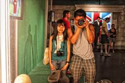
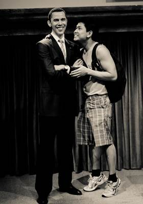
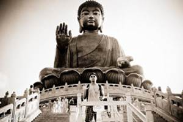

One Big Chinatown
Hong Kong, China
Summer 2010
I was very lucky to have a friend (Aubree) in the country to help me out. I found communication in Hong Kong to be very difficult for me as I only speak a little Cantonese. Thankfully, I had my friend to show me around. She took me to dim sum, where I learned that you have to wash your utensils and cups with the tea provided. My hostel was in Tsim Sha Tsui along Nathan Road, a really long street popular for shopping and food. It rained a lot on my first three days and there was a typhoon warning, but overall the weather was really nice. My stay at the Chungking hostel was an experience because I totally got hustled by a bunch of Indians! Aubree picked me up at the airport and as soon as we got off the bus (a popular bus route known to carry tourists), a swamp of Indians started to grab us in all the wrong places and tried to lure us to their hostels. I have to admit, though, they make good sales people. I'd totally buy it if they weren't too aggresive. I felt sorry for Aubree, who had to endure the harrassment for a 100 meter walk. Aside from that, my room was infested with cockroaches and toilet paper on the ceiling! To be honest, I actually didn't mind, it isn't everyday I get to sleep with these insects. That said, I sort of embrace it and gave a few nicknames (that says a lot about my friendly nature, right?)
Not everything was bad at the hostel. I met a nice girl named Laura there and we became instant friends. We went to the Peak and Madame Tussauds museum together. That was my first time at any wax museum and I absolutely loved it. I was so childish and took pictures of every celebrity I know, like my man Obama and grandmaster Bruce Lee. Unfortunately, the weather that day was so foggy that I couldn't take any nice picture of the popular skyline. I also did not have the courage to go back the next day because getting there was not easy. I doubt I can get there myself if it wasn't for Laura's Mandarin. Hong Kong is really just one big Chinatown, and having grown up in LA Chinatown, I was no stranger to the busy streets and crazy shoppers. When Laura and I went out for street food, I smelled stinky tofu for the first time. I will never forget that smell as it is quite... unforgettable. Oh, this is pretty digusting but I have to say it, when I crossed the street in Nathan Road (a famous street full of shops, just like Broadway in the states), a dog suddenly stopped and pooped right in front of me and I was like "who's going to clean this up!?" Yeah, that's it.
Another place I highly recommend if time permits is Lantau island, which features a famous Buddha statue. The drive up there is magnificent enough. You get to see the luscious green mountains and cattle on the road. The skyline in Hong Kong is the best I've seen so far. At 8 p.m. every day, there is a light show where the light synchronizes with music. One day in Hong Kong, I spontaneously went to Macau and had tons of fun. There was also another day that Aubree took me to the border of Shenzhen. It was beautiful, I love the outskirts of Hong Kong.
Coming here has certainly made me see things in a new way. I am so lucky and blessed to be raised in America. There I have good sanitation, an opportunity to make a name for myself, and more than anything, freedom. Traveling to all these countries is something I will not forget. When I come back to the States, I am certain I will have gained a whole new perspective on the world.